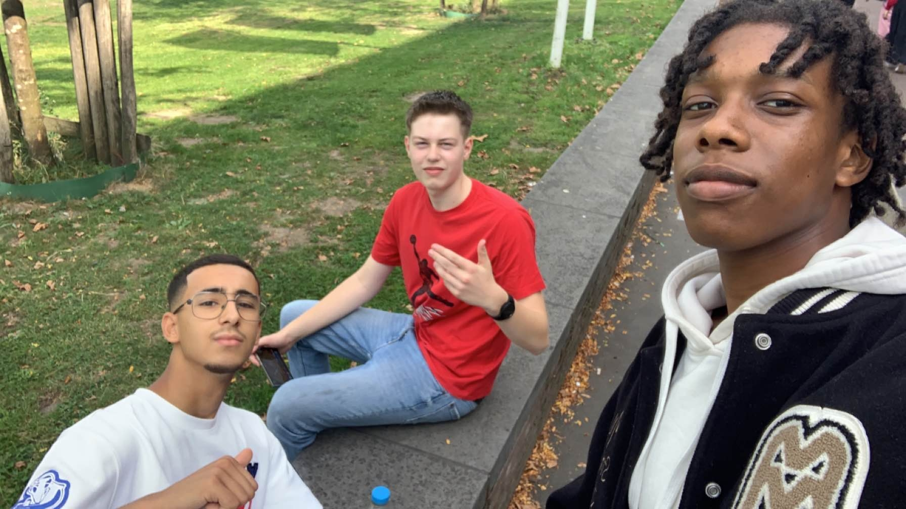

Tishon Vicento
Software Developer
I build creative and spectacular products/websites.



11/11/24 — 18/11/24
Project Week 1
We started the project week with a group discussion to plan our approach. Then, we created a Trello board and a Figma design to organize tasks and project details. Using these as guides, we developed a website based on our plans.
CSS
HTML
Figma
Trello
3/9/24 — 18/11/24
Website Pinkgoose
Pinkgoose was a project to see what we could do and what we could improve on. What we had to do was create a website, based off of an design that was already made. Before long everyone had a own spin on making the website.
CSS
HTML
Figma
VSC
3/9/24 — 28/10/24
Mastermind
Mastermind was a project to test what you had learned before and a way to test yourself. Because there wasn’t really an example, which made everyone’s Mastermind so much different for each other.
Java
Flowgorithm
Pseudo-code
Trello
2024 — Present
Leerjaar 1
In de eerste leerjaar van het opleiding software-developer, heb je een groot hoeveelheid dingen dat je gaat leren. Zoals CSS, HTML, Java, Figma, Trello etc. Het is ook niet alleen op laptop, sommige lessen gebeuren ook op papier en je hebt ook sporten dit jaar.
CSS
HTML
Java
Flowgorithm